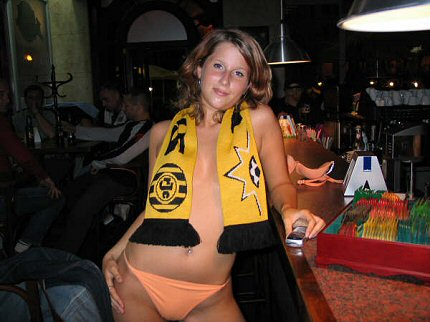
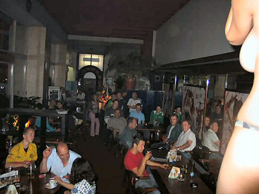

|
Slovan Liberec - Roda JC : second cut |
Slovan
Liberec - Roda JC : second cut
Op vrijdagavond wacht de selectie een training in het vers afgebouwde
stadion U Nissy van Slovan Liberec.
Uitzicht vanaf de hoofdtribune.
Brouwers, Filipovic, Voigt, Van de Ouweland en Castro
zouden uiteindelijk
geen speelminuten krijgen.

De vernieuwde entree.
De training wordt door onder meer een groepje Roda Rebels
bekeken.
In dit krantenartikel wordt gewaarschuwd Roda niet te
onderschatten.

Op de druilerige zaterdagochtend werkt Roda een training af op
het
schamele complex van FK Krasna Studanka.
De accommodatie van Krasna heeft in elk geval een top-attractie.....
Een buitenbad met praktische instap-ladder.
De training zit erop. Tijd voor de middagrust.
Meer dan een uur voordat de wedstrijd begint stroomt het gastenvak al vol.
De sfeer in het Rodavak was ongekend goed. "Sta op als je voor Roda bent"
werd perfect uitgevoerd door de Hollandse toeristen net als "'t is een kwestie
van geduld rustig wachten op den daag det heel Holland Limburgs lult".
De o zo belangrijke goal is gevallen.
Na een knap enerverende slotfase begon de vrolijke terugtocht.
Jaguar was voor velen the place to be, deze trip.

Een van de vele Tsjechische schonen, hier met REBELS-sjaal.

Het café vanuit podiumperspectief.
Deze avond was er een DJ ingehuurd die een leuke mix van
ophitsende
dance en rockpop draaide.
Blik op het frisgeschilderde plafond.
Foto's met dank aan Frans en Brian Ederveen die bij deze
dank wil
zeggen aan de mensen van de camping die zij ook nog even
hebben gefotografeerd in de bus en die een shirt van Roda hebben
meegekregen om in de camping-kantine te hangen.
©
Koempels Pleasure Dome